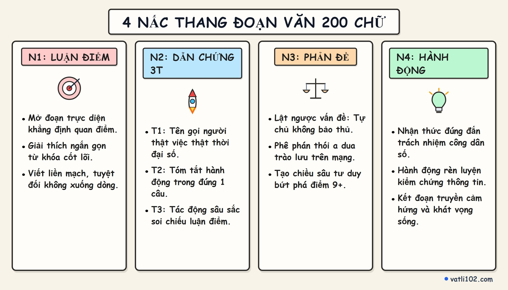

Kỹ Thuật Viết Đoạn Văn NLXH 200 Chữ Chủ Đề 'Bản Lĩnh Số': Công Thức Phản Đề Nâng Điểm 9+
Trong kỳ thi Tốt nghiệp THPT, câu viết đoạn văn nghị luận xã hội khoảng 200 chữ (2.0 điểm) là phần thi quen thuộc nhưng mức điểm trung bình của học sinh thường chỉ dừng ở mức 1.25 đến 1.5 điểm. Lý do lớn nhất là các bài viết hầu hết chỉ nêu quan điểm một chiều, dẫn chứng chung chung và thiếu đi chiều sâu tư duy phản biện.
Để bứt phá lên mức điểm 1.75 – 2.0 điểm tuyệt đối, bài viết của các em bắt buộc phải có bước mở rộng phản đề (lật ngược vấn đề). Bài viết hôm nay sẽ hướng dẫn mô hình 4 nấc thang phản biện cùng kho dẫn chứng sắc sảo về chủ đề thời sự: 'Bản lĩnh số và sự tự chủ của người trẻ trước bão thông tin'.
1. Vì sao góc nhìn Phản đề lại quyết định điểm 9+?
Đáp án chấm thi của Bộ GD&ĐT luôn dành 0.5 điểm cho tiêu chí 'Sáng tạo: Có cách diễn đạt mới mẻ, có suy nghĩ sâu sắc về vấn đề nghị luận'. Một đoạn văn có phản đề sẽ chứng minh cho người chấm thấy:
- Tư duy đa chiều, chín chắn: Em không nhìn nhận cuộc sống theo kiểu nhị nguyên 'trắng - đen' đơn giản, mà hiểu rằng mọi vấn đề xã hội luôn có hai mặt cần cân nhắc.
- Khả năng tranh biện sắc sảo: Biết lường trước những cách hiểu sai lệch, cực đoan để từ đó củng cố tính đúng đắn của luận điểm chính.
- Tránh giáo điều, khuôn mẫu: Biến đoạn văn thành một cuộc đối thoại chân thành về lẽ sống thay vì bài thuyết giảng đạo đức khô khan.
2. Sơ đồ Sketchnote: 4 Nấc thang phản biện đoạn văn 200 chữ

3. Hướng dẫn chi tiết từng nấc thang lập luận
Nấc 1: Xác lập luận điểm trực diện (1 - 2 câu)
Đi thẳng vào vấn đề bằng câu mở đoạn nêu rõ chủ đề và quan điểm cá nhân. Tuyệt đối không dùng những câu dẫn dắt sáo rỗng dài dòng làm hao tốn dung lượng.
Nấc 2: Dẫn chứng thực tế theo công thức 3T (2 - 3 câu)
Áp dụng công thức: Tên gọi (nhân vật/dự án) → Tóm tắt việc (hành động trọng tâm) → Tác động (ý nghĩa soi chiếu luận điểm). Ưu tiên dẫn chứng thời sự trong không gian số.
Nấc 3: Mở rộng phản đề & Phê phán hiện tượng lệch lạc (2 câu)
Sử dụng các cấu trúc chuyển ý linh hoạt như: 'Tuy nhiên, tự chủ không đồng nghĩa với việc tự cô lập mình...', 'Đáng tiếc thay, bên cạnh những bạn trẻ bản lĩnh, vẫn còn một bộ phận...' để chỉ ra mặt trái của vấn đề.
Nấc 4: Bài học nhận thức và hành động bản thân (1 - 2 câu)
Đúc kết thông điệp sống thiết thực và gắn với trách nhiệm của một công dân trẻ trong kỷ nguyên số.
4. Đoạn văn mẫu hoàn chỉnh 200 chữ chuẩn điểm 9.5
5. Bảng dẫn chứng chọn lọc chủ đề 'Bản lĩnh số & Trách nhiệm cá nhân'
| Nhân vật / Dự án | Hành động & Dẫn chứng cụ thể | Ý nghĩa soi chiếu bài viết |
|---|---|---|
| Chiến dịch 'Không gian mạng an toàn' | Tổ chức các buổi tọa đàm nâng cao nhận thức bảo vệ dữ liệu cá nhân cho học sinh THPT. | Thể hiện ý thức tự bảo vệ mình và lan tỏa văn hóa mạng tích cực. |
| Lập trình viên trẻ Lê Yên Thanh | Từ chối lời mời hấp dẫn ở nước ngoài để về nước phát triển ứng dụng giao thông công cộng BusMap phục vụ cộng đồng. | Bản lĩnh kiên định với mục tiêu tạo ra giá trị thiết thực cho xã hội. |
| Phong trào 'Thử thách 7 ngày rời xa màn hình' | Hàng ngàn bạn trẻ chủ động giảm thời gian lướt mạng vô bổ để đọc sách và tham gia thể thao. | Năng lực tự chủ, cân bằng giữa đời sống thực và thế giới ảo. |
6. Checklist 5 điểm cần rà soát trước khi nộp bài
- ✓ Đảm bảo đúng quy cách đoạn văn: Viết hoa lùi đầu dòng câu đầu tiên và chấm kết đoạn ở cuối, tuyệt đối không ngắt xuống dòng giữa chừng.
- ✓ Có đủ 4 thành phần: Giải thích ngắn → Bàn luận & Dẫn chứng → Phản đề → Bài học.
- ✓ Dẫn chứng có nguồn gốc rõ ràng: Nêu đích danh tên người/dự án thật, không bịa đặt.
- ✓ Liên kết câu mượt mà: Sử dụng từ nối tự nhiên, không lặp từ quá nhiều.
- ✓ Chữ viết rõ ràng, sạch đẹp: Trình bày sáng sủa tạo thiện cảm ngay với giám khảo chấm thi.